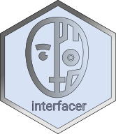

interfacer: Define and Enforce Contracts for Dataframes as Function Parameters
Source:R/interfacer-package.R
interfacer-package.RdA dataframe validation framework for package builders who use dataframes as function parameters. It performs checks on column names, coerces data-types, and checks grouping to make sure user inputs conform to a specification provided by the package author. It provides a mechanism for package authors to automatically document supported dataframe inputs and selectively dispatch to functions depending on the format of a dataframe much like S3 does for classes. It also contains some developer tools to make working with and documenting dataframe specifications easier. It helps package developers to improve their documentation and simplifies parameter validation where dataframes are used as function parameters.
Author
Maintainer: Robert Challen rob.challen@bristol.ac.uk (ORCID) [copyright holder]
Authors:
Robert Challen rob.challen@bristol.ac.uk (ORCID) [copyright holder]